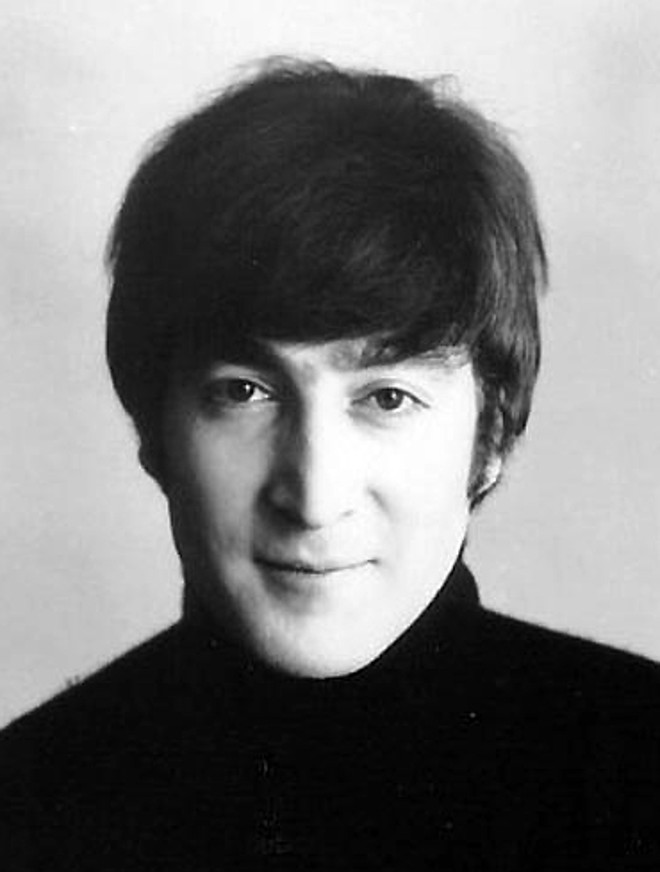

The Beatles foi uma banda de rock inglesa formada em 1960 na cidade de Liverpool. Formada por John Lennon, Paul McCartney, George Harrison e Ringo Starr, é considerada a banda mais influente de todos os tempos. O grupo fez parte do desenvolvimento da contracultura da década de 1960 e do reconhecimento da música popular como forma de arte. Enraizados do skiffle, beat e rock and roll da década de 1950, seu som incorporava elementos da música clássica e pop tradicional de maneiras inovadoras; a banda mais tarde explorou estilos musicais que variavam de baladas e música indiana a psicodelia e hard rock. Como pioneiros em gravação, composição e apresentação artística, o grupo revolucionou muitos aspectos da indústria da música e foi frequentemente divulgado como líder dos movimentos juvenis e socioculturais da época. Liderados por Lennon e McCartney, a banda construiu sua reputação tocando em clubes de Liverpool e Hamburgo durante três anos a partir de 1960, inicialmente com Stuart Sutcliffe tocando baixo. Lennon, McCartney e Harrison, juntos desde 1958, passaram por uma sucessão de bateristas, incluindo Pete Best, antes de pedirem a Starr que se juntasse a eles, em 1962. O gerente Brian Epstein os profissionalizou e o produtor George Martin guiou e desenvolveu suas gravações, expandindo bastante seu sucesso após o primeiro hit, "Love Me Do", no final de 1962. À medida que sua popularidade crescia no intenso frenesi de fãs apelidado como "beatlemania", a banda adquiriu o apelido "Quarteto Fabuloso",[1] com Epstein, Martin e outros relacionados à banda, às vezes, recebendo o título informal de "Quinto Beatle". No início de 1964, os Beatles tornaram-se estrelas internacionais, liderando a "Invasão Britânica" do mercado pop dos Estados Unidos e quebrando vários recordes de vendas. Eles logo fizeram sua estreia no cinema com A Hard Day's Night (1964). A partir de 1965, eles produziram gravações cada vez mais inovadoras, incluindo os álbuns Rubber Soul (1965), Revolver (1966) e Sgt. Pepper's Lonely Hearts Club Band (1967), tendo maior sucesso comercial com The Beatles (1968) e Abbey Road (1969). Em 1968, eles fundaram a Apple Corps, uma corporação multimídia que continua supervisionando projetos relacionados ao legado da banda. Após a separação do grupo em 1970, todos os quatro membros obtiveram sucesso como artistas solo. Lennon foi baleado e morto em dezembro de 1980, e Harrison morreu de câncer de pulmão em novembro de 2001. McCartney e Starr permanecem musicalmente ativos. Os Beatles lideram a lista de artistas mais vendidos de todos os tempos, com vendas certificadas de mais de 183 milhões de unidades nos Estados Unidos e vendas estimadas de 600 milhões de unidades em todo o mundo. Eles detêm o recorde da maioria de álbuns número um na parada de álbuns do Reino Unido, maioria de hits número um na parada Hot 100 da Billboard e maioria de singles vendidos no Reino Unido. O grupo foi introduzido no Rock and Roll Hall of Fame em 1988, e todos os quatro membros foram nomeados individualmente entre 1994 e 2015. Em 2008, o grupo liderou a lista da Billboard dos artistas mais bem sucedidos de todos os tempos na Billboard Hot 100.[2] A banda recebeu sete Grammy Awards,[3] quatro Brit Awards, um Óscar (melhor trilha sonora original por Let It Be, em 1970) e quinze Ivor Novello Awards.[4] A revista Time os inseriu entre as 100 pessoas mais importantes do século XX.
The Beatles
História da banda
Principais Musicas
| Posição | Música | Lançamento |
|---|---|---|
| 1 | Musica Teste | 1998 |
| 2 | Musica Teste | 1998 |
| 3 | Musica Teste | 1998 |
| 4 | Musica Teste | 1998 |
| 5 | Musica Teste | 1998 |
Integrantes

Galeria